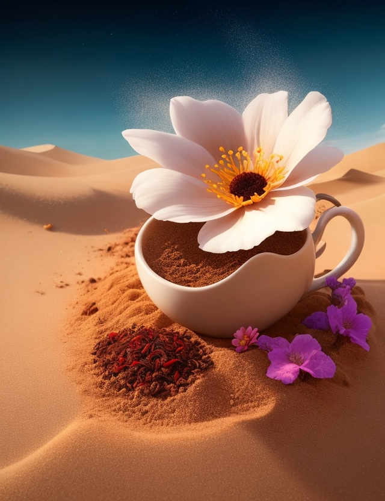

Ещё одно растение ТехноТерры. Оно растет исключительно в земле с чаем.

Интерсеные факты:
Растет исключительно в грунте с чаем.
Во время созревания можно собирать из него чай.
Воспроизводит любой вид чая в котором растёт.
Если заварить несозревший чай вы умерёте.
Этот вид открыл ислледователь Матвей Когалёнок, когда искал чтобы попить к булочкам.
Назад